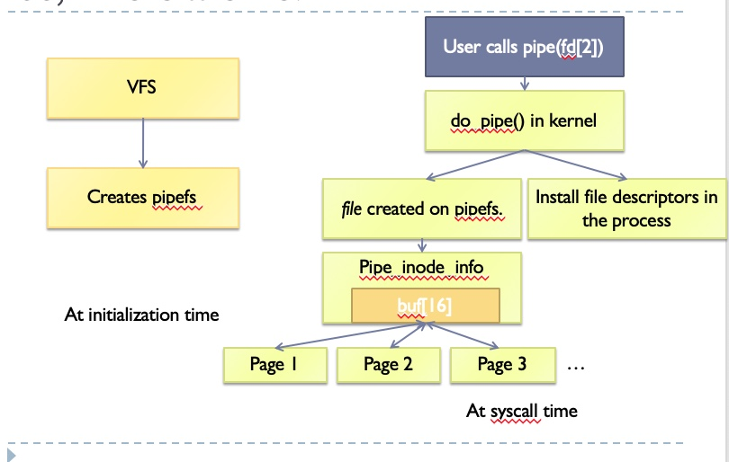
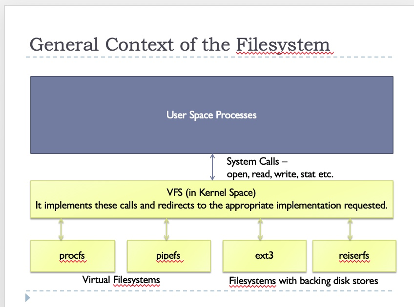
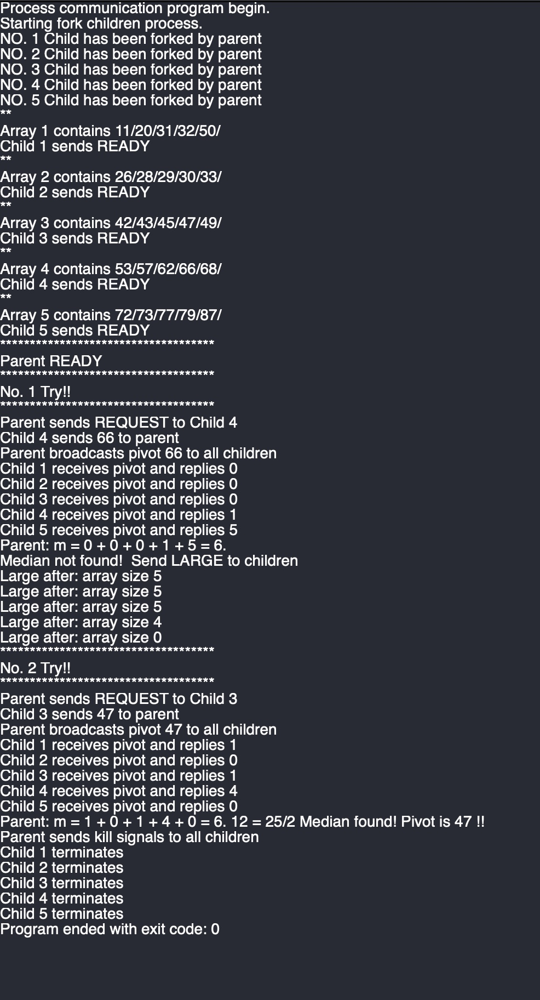

By Zesheng Jia - A00416452
In assignment 1, your task is to implement distributed median finding algorithm using pipes. The parent process spawns K (5) identical child processes along with 2*K (10) pipes - two for each parent-child pair (one sends messages from parent→child, the other sends messages from child→parent). Each child reads an array of 5 integers. The numbers are read from 5 files (one for each child process). The files are named as "input_1.txt", "input_2.txt", ... , "input_5.txt". Various stages of the algorithm (reproduced from the assignment[1]) is given below:
In my version of finding median between 5 input files, I used 2 programs by exec family funcitons.
One is the main program for parent process which invokes 5 children processes,control messages sending and decide when will be the correct ouput by k == m.
The other one is the external program for calculating information and sending calculated messages to parent process.
Message sending includes that array content, array size, pivot , count of numbers that small than pivot and count of numbers that larger than pivot.
Operations on variables includes that delete every number small than pivot, delete every larger number than pivot.
This report will discuss all things happened during I wrote this program. We will begin by explaining the structure and details in functions. In the meantime, I will also talk about what kinds of obstacles I met and how I sovled them.
To be honest, when I first read the insturctions about this assignment, I think it is a single project with mathematics and IPC.
After I finished establishing the Inter process communication part in one C file. I still felt confident about how I could make this work.
However, the next decision I made changed everything.
I chose to use child process execlp() a external process to do the job.
And it helps me create the best project I ever wrote.
Because I can't see anything from external process. So, I guess what happened and use pstacks to idtentify the collapse line.Tried to debug in the dark without a single light. Thousands of failer made me much more long for the sucess. It helps me think what the most important part is in a project.
I went inside of all details in pipe and process. And try to figure out what makes my programm have bugs and block. I will discuss those parts throughly in next few charpters.
At the end, when I finially had the 100% correct outputs , I felt extremely satisfied.
Learn everything I can, before coding.
Think everything I could avoid before coding.
Okay, let's go to the details in my program.
In this part, I will throughly decribe how my program works.
I will divide main program as three parts.
Firstly, it is the fundamental structure to build parent process and child process(before exec). And how to establish their inter process communication.
Secondly, I will briefly talk about the initial part of child process(before exec) and parent process. About how to send ID information between IPC.
Eventually, we will talk about the strategy about invoking external program and its details.
First of all, let's create 10 pipes as each child has 2 pipes to communicate with parent.

By http://www.drkapoorsclinic.com/files/blog/Linux_Kernel_Implementation_of_Pipes_FIFOs.pptx
And then we create 5 children process at the same time.
At the moment, I used a strategy from a website.
Ref : https://blog.csdn.net/cupidove/article/details/9297335
He set a if - break statement in for loop, every time when pid == 0 then break, which makes child process will not continue to fork sub-child process.
After we forked 5 children process.
Then we go to if else statment, to distinguish parent process and children process.
By pid == 0 (child process) or pid > 0 (parent process)
First of all, I create a communication rule between P and C.
As for even number for P2C, odd number for C2P.
By this particular rule, I can make every pipe write and read by child ID without advanced calculating.
So, I wrote four encapsulation methods by myself to make pipe write / read more easily.
After that, I still think it's not enough. Because sometimes we need sending char[] buf messages, and sometimes we need sending int variable. As we know, although system call write/read has no restrictions on the type of variable, which means we can send int to child process and use another int to contain their values, it still could have mistakes. Because the developer needs to remember when the variable is char[] and when the variable is int. Based on the different between two types, there are a lot of more works that need to be done.
So, I decide to change every types of varaible to char[] variable.
It makes my code more flexiable, because even if we forget what type we sent, we can still use printf("%s",buf); to figure out what happened.
In my thought, it is a key feature to assign ID to children process at the beginning. Because in each child they has same PCB from parent. So, their data won't be different.
I observed that all children already inherit 10 pipes. And all the code in child process block are the same.
So, it's hard to distinguish ID by code.
And when I serached the details in pipe system calls.
I know that if P write into pipe, and C read from pipe. Then the buffer will be cleared after reading, which means if Parent send different IDs to pipe, as long as children keep reading from pipe, it will not block.
And use one read() in child process, there will invoke K read() to reach from parent.
SO, how about using only one pipe?
It works.
The first line of children process code.
Because we talk about the strategy of sending IDs before, then child process read pipe[0] directly.
And at this moment, all 5 children processes are already forked.
Then they are waiting for parent sending message. Someone, called it pipe reading block.
So, as long as the parent send IDs one by one, there always will be a child process read the correct message of ID and then it will go to next execute line.
Then next child read.
After all 5 children read sucessfully from parent.
All ID assgin and ID get work done.
As we know, once we use exec family functions invoke external program. It will execture a complied file, terminate the previously child process and become a new process.
And the data saving in previously PCB will be cleared.
Therefore, new external process (we call it ET process only now) will no longer has value of pipes.
I spent a few hours tring to figure out a solution.
And I find a solution on a website:
Ref: https://stackoverflow.com/questions/51996946/c-both-input-and-output-pipe-to-the-external-program
So, in order to make ET process still have access to pipes.
We redirect children own 2 pipe lines to ET process's STDIN_FILENO port and STDOUT_FILENO port.
After this functions, we can use read(STDIN_FILENO , buf, sizeof(buf)) and write(STDOUT_FILENO , buf, sizeof(buf)) to get information from pipes in ET process.
There are a lot of information and knowledge points in exec family. Please read from online or book source. I will omit those for now.
In my function childExecProgram(const char* filename),
we will use execlp() function to execute a new program.
pchar will be the argument to argv[] atint main(int argc, const char * argv[]).
And because of argv[], we can send ID to the new process.
Same header file and global variables are:
Once we get into the new child process, and recive the ID from argv[].
Then the first thing we do is that obtaining data of input_(ID).txt into an array.
And if the array is correct with 5 values in it, then send READY to parent.
I used vector<int> to be the array. Because vector has dynamic items. It is easy to add/delete items and get its size .
Reading data from a file is easy. So, this part will be omitted for now.
After we get the right array from the vector<int>, we add array values with delim as / between each element and put them into a new string.
However, in this case, 5 numbers with 4 / is larger than the limit of a char[] buf can contain. The parent process will only get half of the string.
After a lot of times failer trying, I use 2 strings to contain those information. Send to parent process twice.
After sending array values to parent process.
Then we send READY to parent at the end.
In this part of code, there is a huge bug which happened in my early version of codes. It caused a lot of times random pipe block between successful runnings. The rate is nearly to 1 failed / 20 success.
And I will talk about this situation in whole Charpter 2.
I spent almost 90% time to fix this problem in the dark.
But right now, we focus on functions stucture.
https://github.com/EasonJia9598/Pipe
Output

at /source_code folder